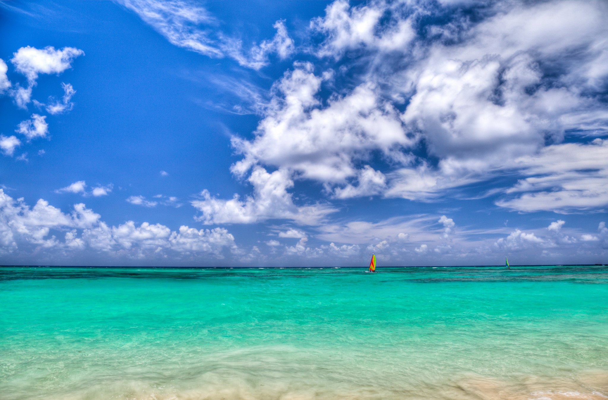
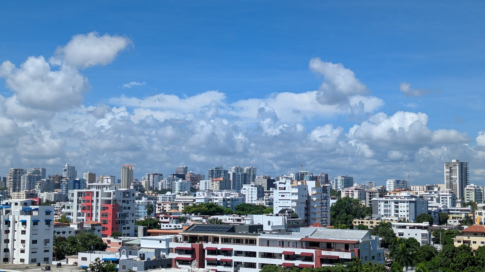
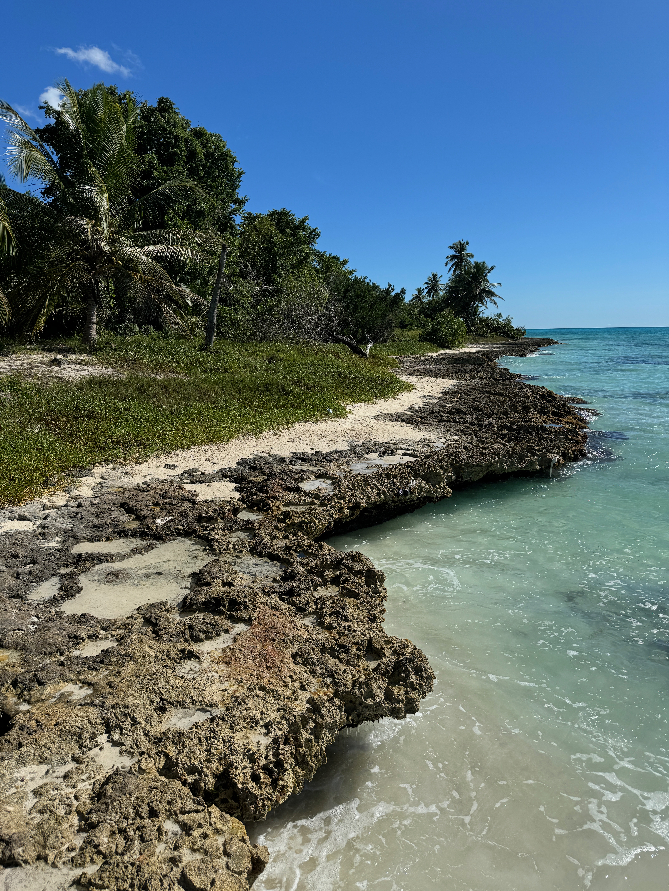
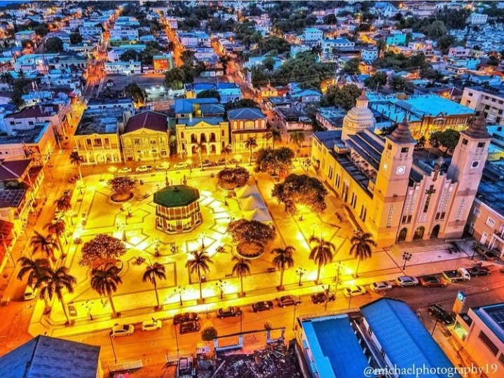
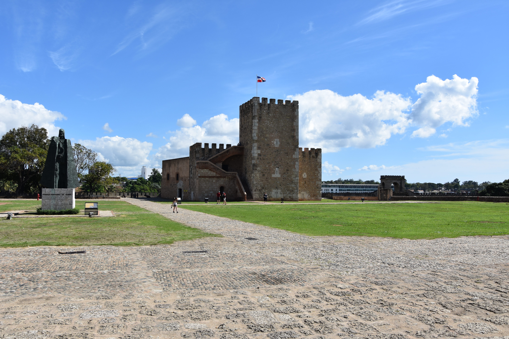
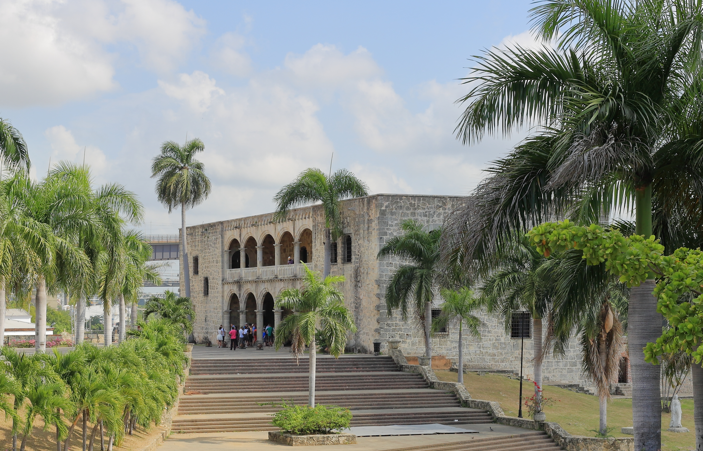
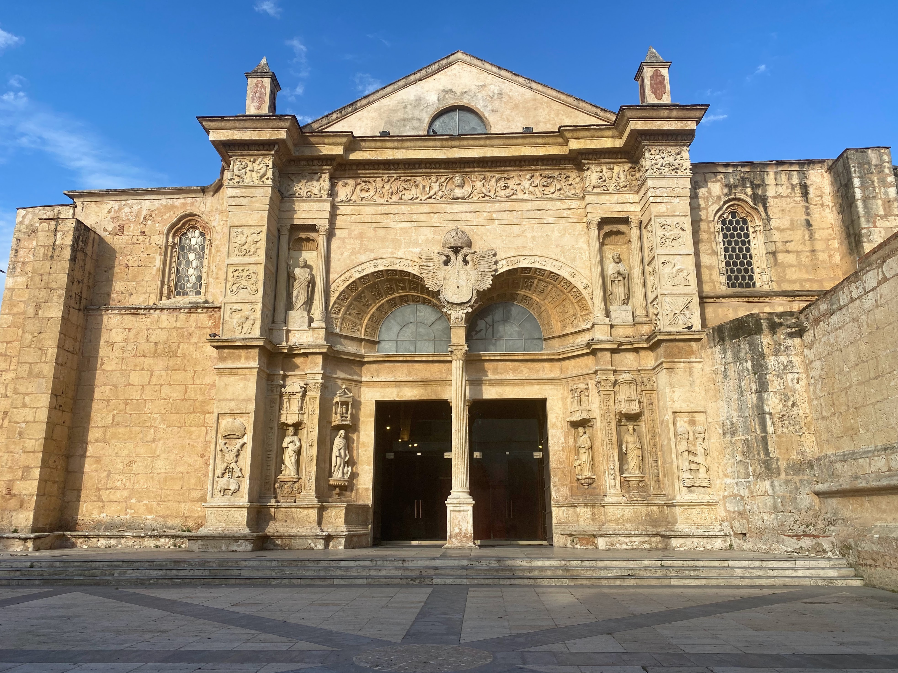
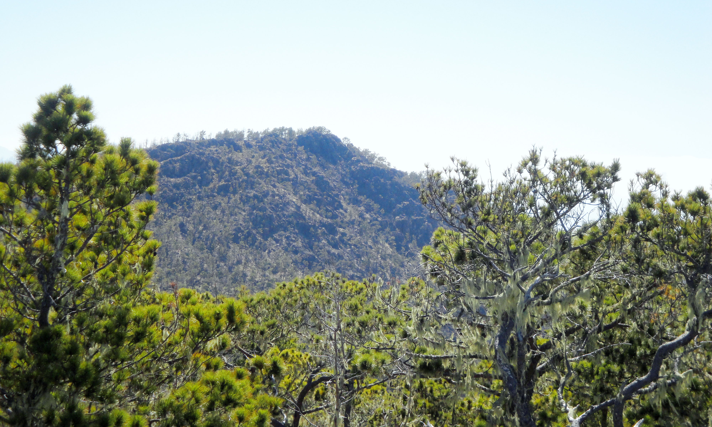

Leste
Punta Cana
Um dos destinos mais conhecidos do Caribe, com praias tropicais, resorts, passeios de barco e atividades aquáticas.
Praias de Bávaro e Cabeza de Toro

Muitos destinos em um só país
A República Dominicana reúne cidades coloniais, praias de águas cristalinas, montanhas imponentes, parques nacionais e pequenas ilhas cercadas pelo mar do Caribe e pelo oceano Atlântico.
Da arquitetura histórica de Santo Domingo às paisagens tropicais de Punta Cana, o país oferece diferentes experiências em uma mesma viagem, combinando cultura, natureza, aventura e descanso.
Primeiras paradas
Quatro destinos que apresentam diferentes paisagens, experiências e capítulos da história dominicana.

Leste
Um dos destinos mais conhecidos do Caribe, com praias tropicais, resorts, passeios de barco e atividades aquáticas.
Praias de Bávaro e Cabeza de Toro

Sul
A capital dominicana combina construções coloniais, praças históricas, museus e uma vida urbana vibrante.
Zona Colonial e Calle Las Damas

Sudeste
Um refúgio natural com praias paradisíacas, piscinas naturais e passeios de barco em meio ao mar caribenho.
Parque Nacional Cotubanamá e praias

Norte
Uma cidade costeira conhecida por sua arquitetura colorida, praias e paisagens montanhosas.
Teleférico e centro histórico
Arquitetura e memória
Monumentos e construções que ajudam a compreender a formação do país e suas influências culturais.

Santo Domingo
Uma construção histórica de caráter militar que faz parte do patrimônio arquitetônico da capital.

Santo Domingo
Antiga residência ligada à família Colombo, hoje um museu que apresenta mobiliário, obras e elementos da vida colonial.

Santo Domingo
Um dos monumentos religiosos mais emblemáticos da capital, conhecido por sua arquitetura histórica e importância cultural.
Santo Domingo
Um dos conjuntos históricos mais importantes das Américas, com ruas antigas, praças e edifícios que preservam a memória do período colonial.
Além das cidades
Florestas tropicais, montanhas, cavernas e praias revelam a diversidade natural da República Dominicana.

Nordeste
Uma paisagem de manguezais, cavernas, formações rochosas e aves, ideal para passeios de barco e ecoturismo.

Interior

Norte · Puerto Plata

Caribe
Ideias para começar
Sugestões ilustrativas para organizar destinos de acordo com o tempo disponível.
03 dias
Santo Domingo e arredores
Explore a Cidade Colonial, visite monumentos históricos e reserve tempo para conhecer a gastronomia e a vida cultural da capital.
07 dias
Santo Domingo, Punta Cana e Ilha Saona
Combine passeios históricos na capital com dias de praia em Punta Cana e uma excursão à Ilha Saona.
10 dias
História, praias e natureza
Comece em Santo Domingo, siga para Punta Cana e Ilha Saona e termine explorando Puerto Plata e suas atrações naturais.
Antes de viajar
Pequenas escolhas podem tornar a viagem mais tranquila, segura e responsável.
Considere transfers, excursões organizadas e transporte autorizado para deslocamentos entre aeroportos, cidades e atrações. Verifique os trajetos antes de sair.
O país tem clima tropical durante todo o ano. Consulte as previsões e considere a temporada de furacões no Atlântico, que vai de junho a novembro.
Confira os horários, as condições de visita e as regras de acesso nos canais oficiais. Reserve passeios populares com antecedência.
Agrupe atrações próximas, respeite as áreas naturais protegidas e reserve tempo para os deslocamentos, o descanso e as experiências locais.
Continue explorando
As fotografias desta página foram obtidas no Wikimedia Commons. Cada crédito identifica o arquivo original, a autoria informada na página de origem e a licença aplicável. As imagens podem ser redimensionadas ou recortadas para se ajustarem ao layout da página.